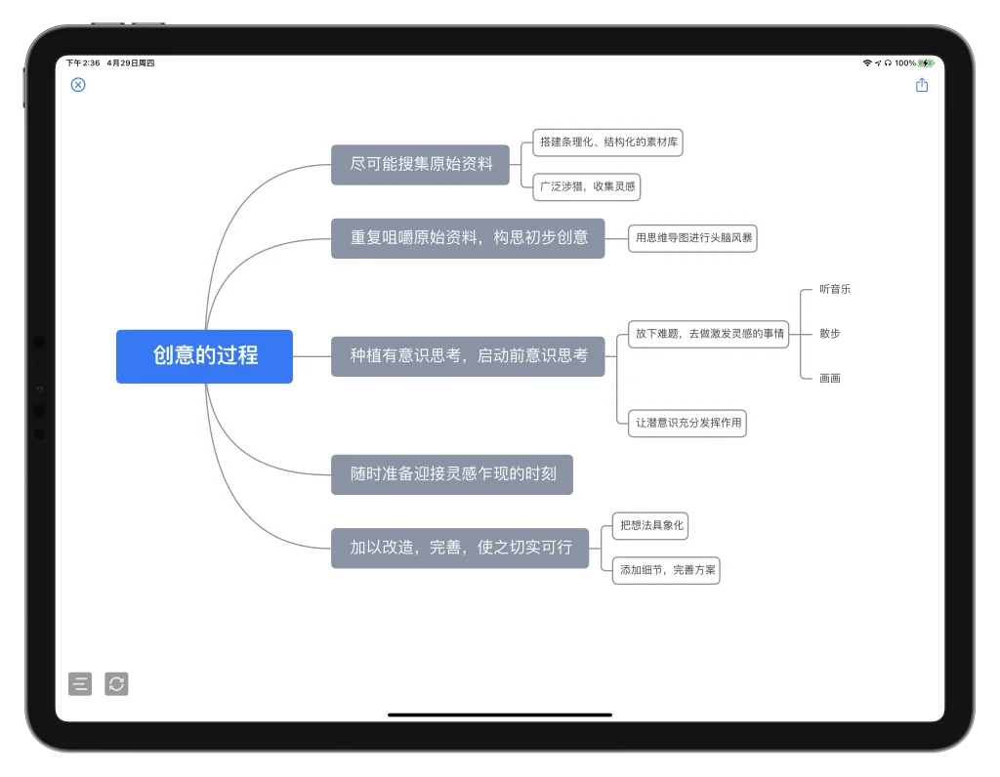
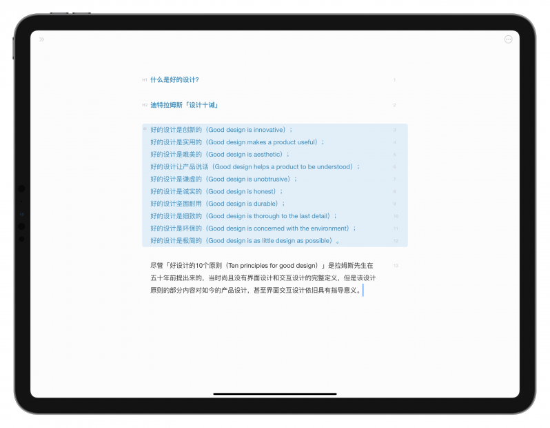

周五晚上的方案救星：当思路乱成一团时我怎么用 Effieapp 理清楚
一个周五傍晚的真实场景——DDL 就在眼前，方案大纲散在各处，从朋友推荐到用双向同步的大纲和导图一步步搞定，Effieapp 帮我把混乱的思路收进了一张画布。
周五下午五点四十分，群里有人说了句"方案初稿周一早上要"。我盯着屏幕，浏览器标签页开了十多个，OneNote 里写了三段没头没尾的段落，白板上画的思维导图从两个月前就没更新过——那些支离破碎的想法像被风吹散的便利贴，落在哪儿的都有，就是凑不到一块去。
同事凑过来看了一眼，说试试 Effieapp？我后来去它的官网看了一下介绍。大纲工具用过几个，思维导图也有自己的老伙计，换一个新的又得重新适应快捷键和数据迁移，周末哪有那个闲心。但他说的一句话戳中了我："它不是大纲也不是导图，是同一个东西的两个视角。"
先把脑子里的碎片倒出来
安装包从官方下载拿到，打开 Effieapp，界面干净得让人有点不习惯——没有侧边栏的各种分类标签，也没有密密麻麻的工具栏按钮，就是一张空白的写作卡片。新建文稿之后我敲了几个大标题，把脑子里最先冒出来的几个方向先列上去：用户画像、竞品分析、核心功能、盈利模式……
然后我注意到左下角那个小图标。切一下，大纲直接变成了一张思维导图。
这一下把我震住了。不是"导出大纲到导图"那种需要另存为文件再导入的操作——是同一个文档，切过去就是导图，切回来就是大纲，两边的节点一毛一样。我在导图上拖动一个节点改变父子关系，切回大纲看，列表缩进自动跟着变了。反过来也一样，在大纲里删了一条，导图上对应的节点直接消失。它不是两个工具拼在一起，是一份数据长了两张脸。

这解决了我一个老问题：以前整理方案总是先在 XMind 里搭结构，再一层层展开写正文，写到一半发现某个分支结构要大改，就得回去重新调整导图，再回头来改大纲，来回同步能把人搞疯。Effieapp 把中间那道墙拆了——我现在想改结构就切导图拖节点，想填内容就切大纲敲文字，没有版本错位，没有手动同步。
在导图上动手脚比在大纲里舒服多了
一开始我只敢在大纲里写，导图就看看。但当我试着在导图上右键一个节点插入子节点，新的子节点立刻就出现在了大纲的对应位置——我才意识到，导图面板不只是用来"看"的，它是一个完整的编辑界面。
双击节点就能改文字，拖到另一个节点上就能把它变成别人的子节点，拖到同层其他节点旁边就能调整顺序。我把之前散在各个文档里的想法一条条拖进来，在导图画布上像摆弄便利贴一样重新排布。空白处双击能一键回到中心，按住 Ctrl 滚动滚轮缩放，按住空格拖动平移——这些画布操作跟我用惯的绘图软件一个手感，几乎不用学习。
最爽的是框选。我按住鼠标在空白处画了个框，一下子选中了五个节点，然后整体往另一边一拖，整块结构就跟着动了。以前在大纲里要调整一大段列表的层级，得按住 Tab 或 Shift+Tab 一个个来，现在框一下、拖一下、完事。
那些不起眼但真的省时间的小细节
等思路顺了，开始填充内容的时候，几个小功能又让我停下来多看了两眼。
括号和引号会自动补全。我敲一个 (，右括号自动出现在光标右边，光标跳到两个括号中间等我输入。写技术参数、加注释、甚至就是日常写作里加个括号说明，都不用再手动打右边那个半角符号了。这个在代码编辑器里早就有的功能，放在写作软件里反而显得特别贴心。
按一下 F5 就能插入时间戳，弹出一个小菜单让你挑格式。做方案经常要标注版本日期，以前得手动敲，现在一键搞定。还有那个排版功能，从别的地方粘贴过来的内容缩进乱七八糟、空行东一块西一块的，Ctrl+Alt+F 按一下，列表缩进统一了、空行规整了、Markdown 标记也规范化了——我从一个竞品分析文档里整段复制过来的文字，排版之后居然跟自己在 Effieapp 里写的没什么区别。

快捷键这件事也值得单独说一说。Effieapp 的快捷键不是写在帮助文档里让你背的，Mac 用户长按 ⌘ 键，当前界面能用的快捷键直接弹个面板列在那儿；Windows 用户在菜单里每一项都标了对应按键。我现在最常用的三个：Ctrl+N 新建文稿、Ctrl+\` 切换思维导图、Ctrl+Shift+F 搜索文稿。双手不用离开键盘，从想法到成文的整个过程里，鼠标只用在导图面板上拖节点的时候才拿起来。想了解更完整的功能列表，去Effieapp文档里翻一下就行。
从一团乱麻到一张导图
三个小时后，方案的骨架完整了。我在大纲里把每个分支该写的要点都填上，切到导图检查结构有没有遗漏，拖动调整了几处分支的位置让逻辑更顺，再切回大纲补了几段正文。最后按一下排版，确认格式没问题，导出了一份 PDF。
导出的文件里，文稿大纲作为文档的一部分保留了下来，思维导图的节点结构也完整呈现在大纲视图里——虽然 Effieapp 目前还不能把导图本身单独导出成图片，但对于一份方案来说，嵌入在文稿里的大纲已经足够让审阅者快速把握整体结构了。
双向同步这个设计思路贯穿了整个产品。所有你在大纲里做的事，在导图里也能做，反过来也成立。这不是什么花哨的功能，就是一个踏踏实实的工程决策：既然大纲和导图本来就是同一份数据的两种呈现，为什么要让用户维护两份、在两个文件之间来回同步？
写在最后
周末没有加班。周一早上提交方案的时候我想，要是当初硬着头皮继续在旧工具里折腾，说不定周日还在调那个破导图。Effieapp 帮我省掉的不只是几个小时的整理时间，更重要的是它让"整理思路"这件事本身变得不那么痛苦了——在导图画布上拖动节点的那种手感，比在一行行文本里调缩进要直观得多，也有意思得多。
现在 Effieapp 已经是我日常写作的主要工具了。这套软件的资料我在三个仓库都存了一份——GitHub上是主仓库，Gitee同步了一份方便国内访问，GitCode那边也有完整目录，不管你习惯哪个平台都能找到。